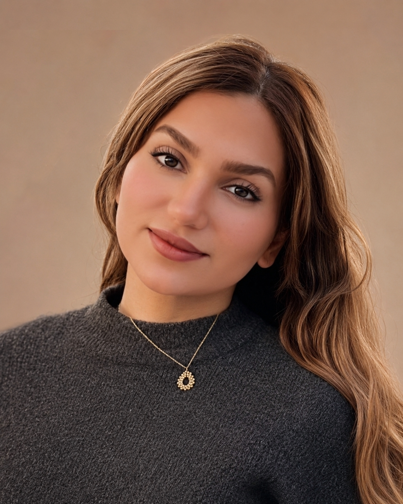

Mehranna Ziari
I bring laboratory experience, clinical trial knowledge and project coordination together. Medical laboratory scientist with a Master's in Global Public Health from Germany, ICH-GCP certified, and used to working precisely according to SOPs.

Three ways I add value from day one
My background sits where the laboratory, clinical studies and project work meet. These are the roles I am looking for in Germany.
Clinical trial support
- ICH-GCP certified; clinical trial courses with projects in the role of Clinical Trial Manager
- Maintaining study and project files, databases and status reports
- Document filing and quality control, traceable records, audit preparation
- Correspondence with physicians, sites, sponsors and service providers
Laboratory & quality
- Hospital lab rotations in haematology, microbiology, clinical chemistry, immunology and pathology
- Cell culture and sterile work, light microscopy, basics of chromatography and protein purification, BSL-2
- Two years in a regulated blood transfusion service: 7,000+ donations checked and documented
- Sample inventory, storage, shipment and documented destruction; laboratory information system
Project & proposal coordination
- Coordinating parallel healthcare and congress projects, deadlines and review rounds
- Proposals and bid documents, market and competitor research
- Budgets, invoices, Excel analyses and KPI reports
- Teams/SharePoint spaces, PowerPoint, Canva, InDesign and AI tools
Where I have done this work
Regulated laboratory work first, then project coordination in German healthcare.
Nuremberg
Project Management Assistant (Working Student)
- Supports project managers in several parallel medical congress and healthcare projects; tracks tasks, deadlines and progress.
- Prepares proposals and bid documents for new congresses, including client and competitor research.
- Maintains project, cost and payment data; reconciles invoices and creates Excel and KPI reports.
- Orders and manages project supplies; sets up Teams and SharePoint spaces.
- Introduced AI tools for design and marketing; designs brochures and flyers, runs the LinkedIn company pages.
Nuremberg
Administration & Office Management
- Maintained customer, order and invoice data in digital systems with high data quality.
- Coordinated processes between customers, store and head office; worked with KPIs.
Amol, Iran
Quality Control Associate
- Assessed quality and safety data against specifications; documented deviations and corrective actions and followed them up.
Amol, Iran
Laboratory Associate, Blood Transfusion Service
- Worked strictly according to SOPs with high requirements for documentation, traceability and product safety.
- Checked and documented processes for more than 7,000 blood donations; maintained data in the laboratory information system.
- Managed inventory, storage and shipment of blood units and samples; supported internal audits.
Amol, Iran
Internship, Medical Laboratory Sciences
- One year in haematology, microbiology, clinical chemistry, immunology and pathology/histology.
Examples of how I work
Use and acceptance of digital health insurer services
Designed a quantitative study with 101 participants, collected and analysed the data and turned the results into evidence-based recommendations for digital health services.
Clinical trial projects as Clinical Trial Manager
Worked through how a study is planned, documented and controlled under ICH-GCP, from timelines and documents to communication with study teams.
7,000+ donations, every step traceable
Checked and documented donation processes according to national and international safety protocols, supported internal audits and helped produce leukocyte-reduced red cell concentrates.
Bringing AI tools into a healthcare team
Introduced AI tools for design and marketing, built the LinkedIn company pages and created new brochures and flyers, so the team works faster and presents itself more clearly.
What I work with
Clinical research & quality
ICH-GCP · SOP-based work · document QC and filing · traceability · internal audits · deviations and corrective actions
Laboratory
Haematology · microbiology · clinical chemistry · immunology · cell culture · sterile technique · light microscopy · sample management · LIS
Project & data
Project planning · deadlines and review cycles · budgets and invoices · Excel (pivot, XLOOKUP) · KPI reports · Asana · Zenkit · Scrum/Kanban
Communication & digital
Microsoft 365 (Teams, SharePoint, Word, PowerPoint) · Canva · InDesign · LinkedIn · AI-supported workflows · English C1, German B2, Persian native
Background
- M.Sc. Global Public HealthDeggendorf Institute of Technology, Germany · 2024–2026 · clinical research methods, health policy & regulation, health data analysis, project management
- B.Sc. Medical Laboratory SciencesMazandaran University of Medical Sciences · 2016–2020 · German grade equivalent 1.9 · one-year hospital lab internship
- ICH Good Clinical Practice (GCP)Global Health Network, University of Oxford, 2024
- Leading Healthcare Quality and SafetyGeorge Washington University, 2021
- Agile Project ManagementGoogle, 2024 · Analyzing Data with Excel IBM, 2024
Let's talk
Available full-time about one month after signing. Based in Nuremberg and open to relocating within Germany, hybrid or remote.